Contacts choisis
La peluche n’appelle et ne reçoit que les proches que vous avez approuvés.
Jouer. Apprendre. Communiquer. Rêver.
BeyaBear’s est la peluche dont l’œil est un écran. Elle appelle les proches, raconte des histoires, répond aux questions et veille la nuit.
Plus qu’une peluche, un vrai compagnon de vie.
Touchez une fonction : l’écran change dans le visage de l’ourson. Puis ouvrez la démo complète, elle fonctionne dès maintenant sur votre téléphone, avec la voix, la caméra et les appels.
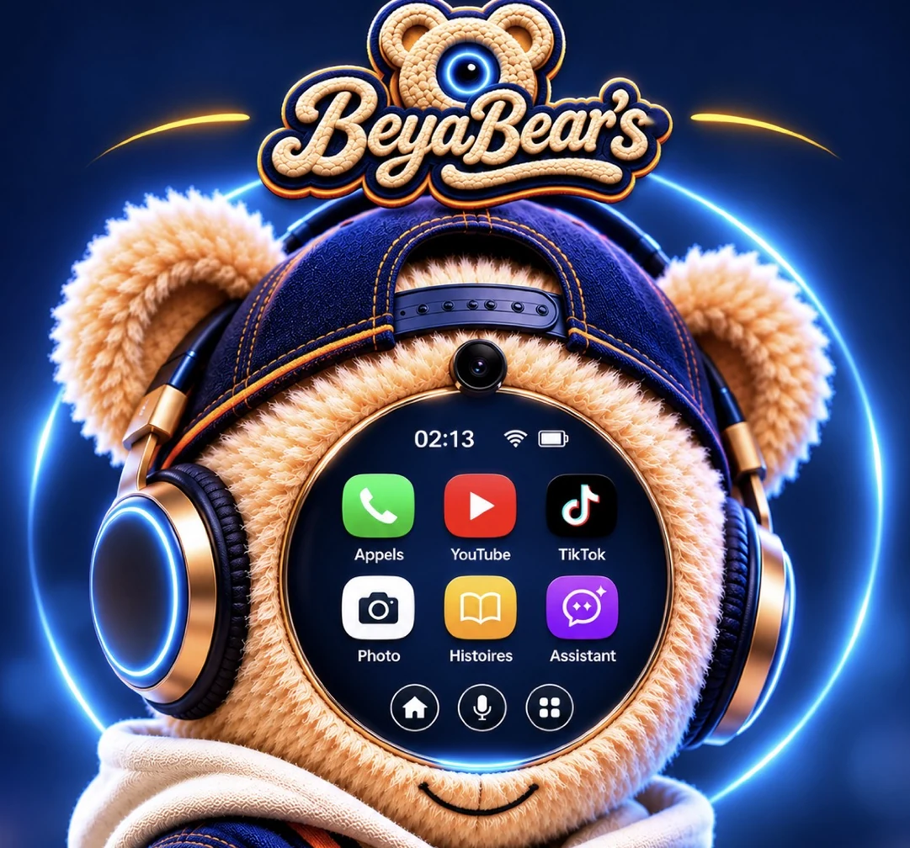

Blouson teddy, casquette, casque audio : chacun a son style et son prénom. Tous ont le même écran rond au milieu du visage.
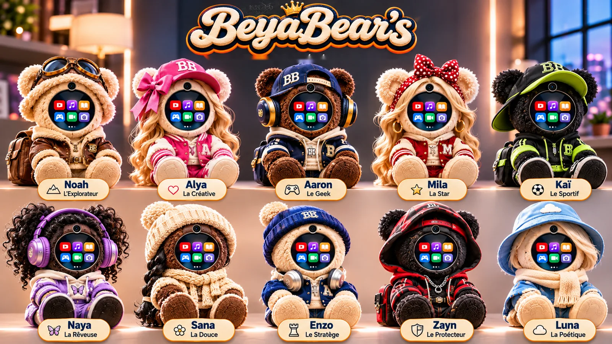
Touchez un compagnon pour ouvrir sa fiche.
Les dix compagnons ci-dessus forment la collection principale. Léa, Izan, Rayan et d’autres, comme Kareem, Dara, Elio, Yanis ou Nova, montrent à titre indicatif les modèles qui pourront la rejoindre.
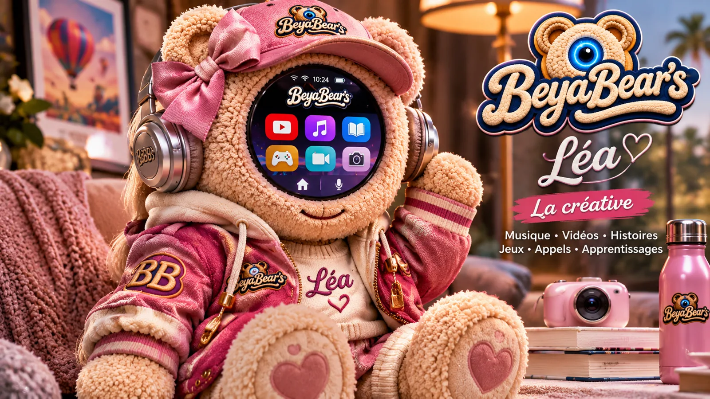
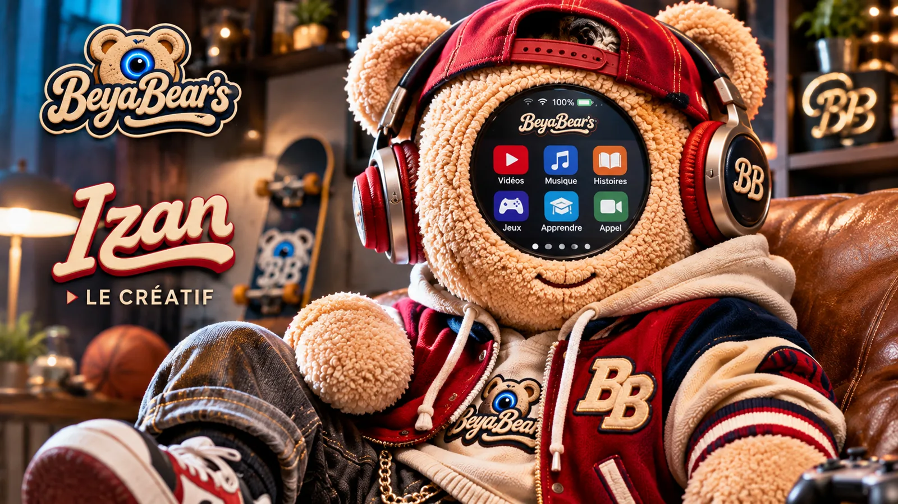
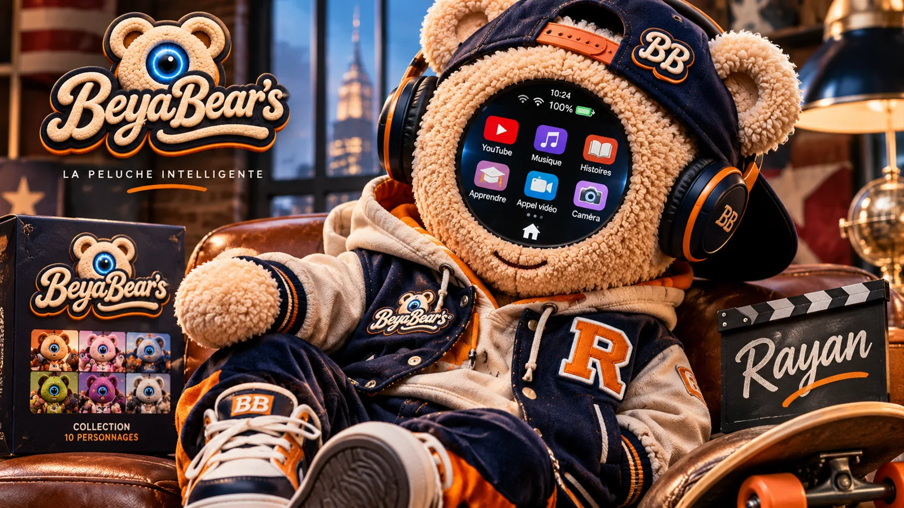
Le même compagnon, habillé aux couleurs du monde. Une série à collectionner, pays après pays, et une porte d’entrée sur chaque marché.

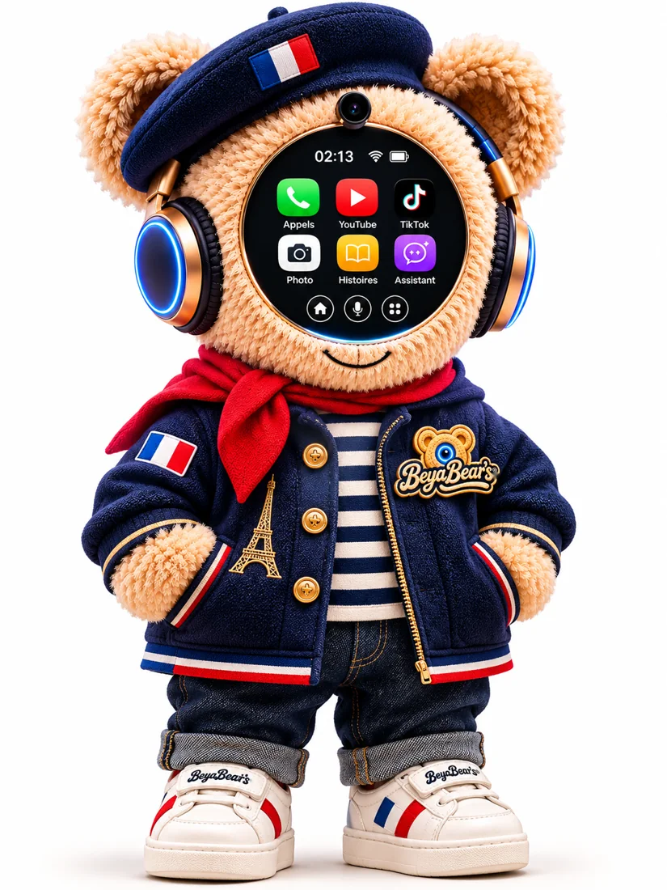

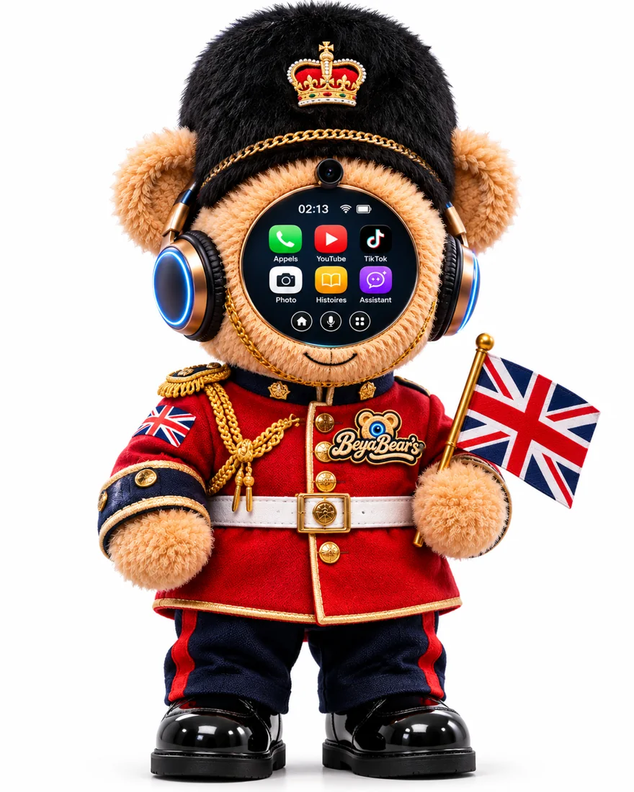


Concepts de tenues. Les modèles commercialisés seront annoncés au lancement.
Vidéos, musique, histoires, jeux, apprentissages, appels vidéo et appareil photo : tout tient dans un écran rond que l’on touche du doigt.
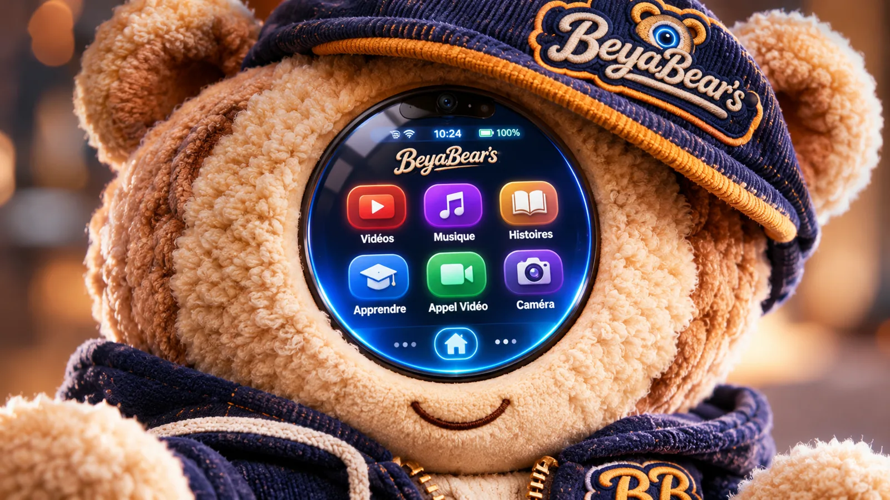

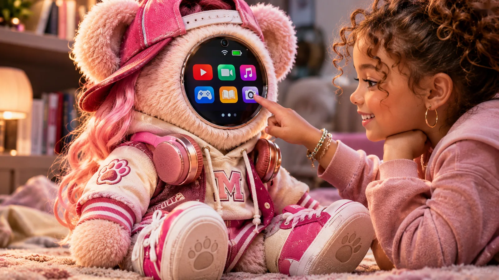
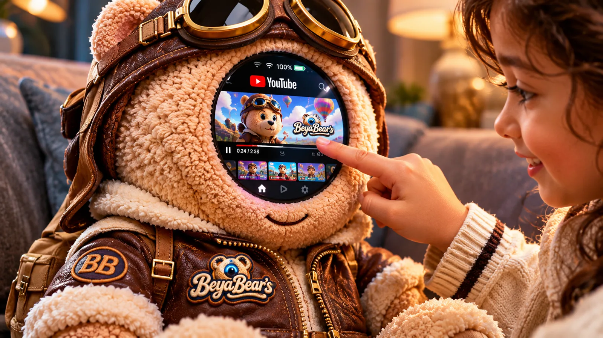

L’enfant qui appelle ses parents, la grand-mère qui voit ses petits-enfants, le papa qui suit une recette, l’ado qui joue, la future maman qui se détend.
Visuels marketing, à titre indicatif. Les applications et marques tierces (YouTube, WhatsApp…) sont montrées comme exemples d’usage et appartiennent à leurs propriétaires respectifs.
Un écran pour enfant doit d’abord rassurer les adultes. Tout se règle depuis votre téléphone.
La peluche n’appelle et ne reçoit que les proches que vous avez approuvés.
Vous fixez les horaires et la durée. Le soir, l’œil passe en veilleuse.
Vidéos, jeux et réponses de l’assistant sont filtrés selon l’âge de l’enfant.
La caméra ne s’allume que pendant un appel ou une photo, et un voyant le signale.
Les visages reconnus restent enregistrés dans la peluche, pas sur Internet.
Écran éteint, il reste une peluche que l’on emmène partout.
Fonctions prévues pour la version commercialisée.
249 €
Réservation gratuite et sans engagement. La date de livraison sera annoncée aux inscrits.
249 €, une seule fois. Elle fonctionne en Wi-Fi à la maison, sans abonnement.
En option, pour rester connecté partout sans Wi-Fi. Tarif mensuel annoncé au lancement.
Tenues, accessoires et nouveaux compagnons pour agrandir la collection.
Coucher de soleil, cabriolet et bonne humeur : les compagnons partent en balade, et on a envie de monter avec eux.
Le logo brodé passe du doudou au vestiaire : une ligne streetwear et des objets du quotidien, pour les enfants comme pour leurs parents.
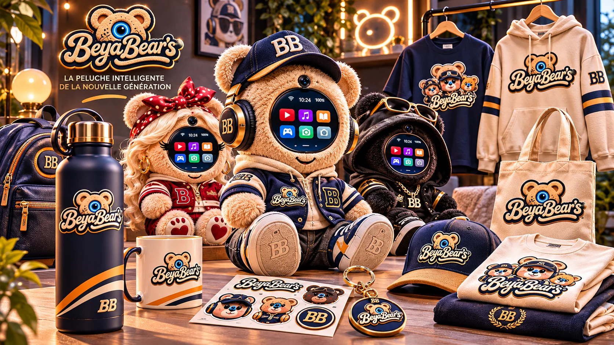
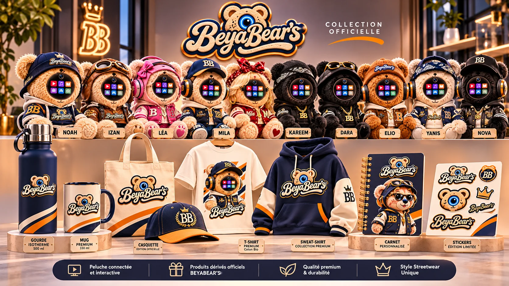


Concepts de produits dérivés, non encore en vente. Les prénoms affichés sur ces visuels illustrent de futurs modèles possibles.
Un lieu où l’on vient choisir son compagnon, l’essayer et repartir avec tout son univers : peluches, casques, montres et accessoires.

Image de concept. Aucune boutique n’est ouverte à ce jour.
Rien ne dépasse : l'écran affleure le visage, la caméra tient dans un œillet de dix millimètres, le son sort du dos.
Caractéristiques du prototype en cours d'assemblage. Elles peuvent évoluer avant la série.
Non. À la maison, la peluche se connecte au Wi-Fi. Le forfait familial est une option pour l’emmener partout.
Oui. Seuls les proches approuvés par les parents peuvent appeler ou être appelés. Ils rejoignent l’appel depuis un simple lien, sans rien installer.
Vous fixez le temps d’écran et les horaires. Au repos, l’œil affiche un regard ou une veilleuse, pas des vidéos.
L’âge conseillé sera confirmé à l’issue des tests de sécurité obligatoires pour les jouets. Il sera indiqué avant l’ouverture des commandes.
Le prototype est en cours d’assemblage. La date sera annoncée en priorité aux personnes inscrites sur la liste de réservation.
Non. Elle est gratuite et vous ne payez rien aujourd’hui. Vous serez simplement prévenu en premier.

249 € au lancement. Inscrivez-vous pour être prévenu en premier, sans rien payer aujourd’hui.